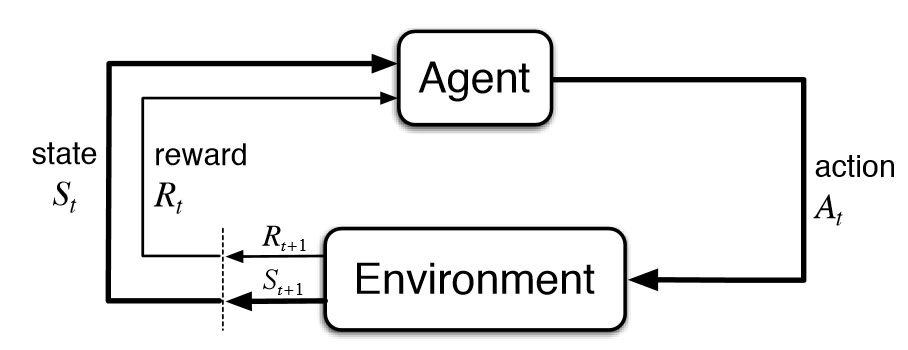
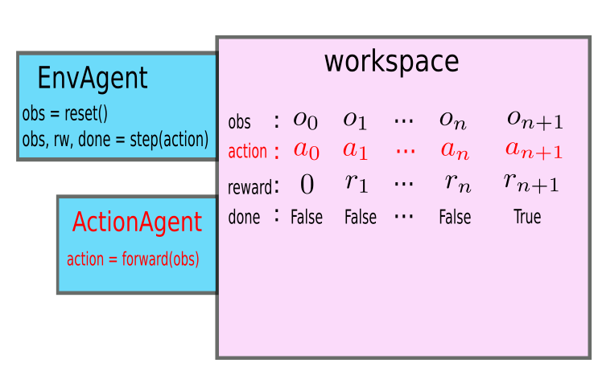

This page is the main entry point to the BBRL documentation. We introduce the conceptual model behind BBRL and orient the reader towards various aspects of using BBRL for coding reinforcement learning algorithms. Beyond understanding the concepts, the reader should practice using the provided notebooks.
BBRL stands for “BlackBoard Reinforcement Learning”. It is a library designed for education purposes to facilitate coding reinforcement learning (RL) algorithms. The general idea is to represent everything as agents interacting into a workspace, which is similar to the blackboard approach in multiagent systems (hence the name of the library).
Initially, the BBRL library was a fork of the SaLinA library. But SaLinA is a general model for efficiently coding sequential learning algorithms whereas BBRL is designed to teach various RL concepts and phenomena as well as teaching to code RL algorithms. So BBRL focuses on a subset of SaLinA. Besides, some SaLinA bugs were fixed. Finally, moving from OpenAI gym to gymnasium required updating several things. Thus the fork drifted away from SaLinA and is now independent, even if the conceptual approach is the same and some parts of the code are still inherited from SaLinA.
Conceptually, a workspace is a space where agents interact. In practice, it is implemented as a dictionary where keys are the names of variables and values are Tensors that temporal agents can write into or read from.
The implementation of BBRL workspaces is available here. The tensors written in the workspace represent the values of variables along time and can be in shared memory in the case of multiprocessing or not.
Note also that when using gradient descent techniques from pytorch over data stored into workspaces, some gradient information can be attached through computation graphs to the stored tensors. All these gradient informations can be removed by applying workspace.zero_grad() as you would do for a single tensor.
Agents are the entities interacting into a workspace. In practice, all agents interacting with a workspace have to be encapsulated into a temporal agent, from the class BBRL.agents.TemporalAgent. A temporal agent contains an object of the class BBRL.agents.Agents which iteself contains a list of inner agents. A BBRL algorithm will generally consists of the composition of several agents interacting in the same workspace by reading and writing each other’s variables.
For instance, one can implement the basic RL loop by having an environment agent which writes states and rewards and a RL agent which writes actions, both agents reading the variables from the other at each time step.
Each agent must contain a forward() function that is called at each time step. This function can read variables at a given from the workspace with value = self.get(label, t) and they can write variables with self.set((label, t) value), where “label” is a string representing the name of the variable.
Calling the temporal agent with a workspace in parameter will call all its inner agents sequentially so that the read and write inside the workspace at each time step for a number of steps or until a termination condition is met.
To get a more practical understanding of the above concepts and the way they are implemented, you should open (using jupyter notebook or a Google colaboratory) this notebook which contains examples and exercises.
The design model behind BBRL, inherited from SaLinA, has several nice features:
When applied to RL, additional features of BBRL are revealed.
The standard figure below from the Sutton and Barto’s book (ref) presents the interaction between an agent and its environment in RL.
In most RL libraries such as Stable Baseline 3 (ref notebook), this interaction is represented in a central piece of code which is equipped with hooks to be able to apply callbacks and where you can put wrappers around the environment.
In BBRL, this core loop is represented by applying a temporal agent to a workspace, as depicted below, and data from the interaction is simply retrieved as a dictionary of tensors.
Note that everything interacting in a workspace is an agent, so in BBRL the RL environment is an agent too.
In most use cases of RL, this environment agent will build upon a gymnasium environment.
Thus is must be capable of calling reset() and step() following the gymnasium interface so as to write observations and rewards through time along the unfolding of interaction episodes.
A key feature of BBRL is that it provides a generic ParallelGymAgent class that builds upon any gymnasium environment and that provides all the necessary mechanics to transparently run this environment into the workspace without having to care about writing observations and rewards, dealing with the end of the episodes, etc.
In addition to facilitating interactions between an RL agent and a single environment, as the name implies, the ParallelGymAgent makes it possible to represent several instances of the same gymnasium environment in parallel, making it possible to train an agent into several identical environments at the same time.
This feature is important for RL, as most deep RL algorithms are more stable when the learning agent is trained from multiple environments.
But is raises some issues.
In particular, if an agent is running episodes over several environments and an episode in an environment stops before the others, what should the algorithm do:
freeze learning in this environment until all episodes are finished in all other environments? This can be a huge waste of time and computational resources. That’s the autoreset=False option.
or restart the agent in this environment, and desynchronize episodes in the various environments? That’s the autoreset=True option. This solution looks better, but it raises additional issues.
More details about these options can be found here here.
Most RL problems are episodic: at some point, the episode stops and the learning agent is eventually reset somewhere else. One condition for stopping an episode can be that a time limit has been reached. This case is known in the literature to raise some consistency issues. This is explained here.